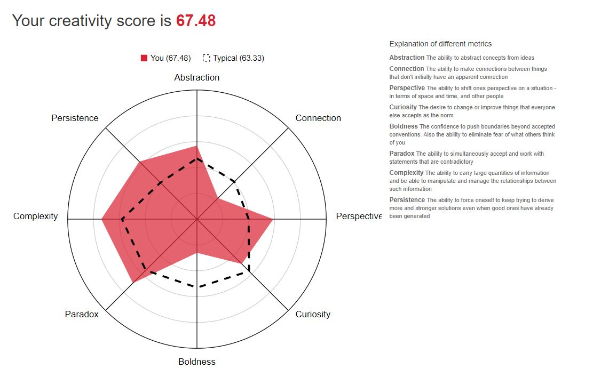

Personal Information
Name: James Alexander Crew
Student number: s3812391
Email Address: crewja@outlook.com
Nationality: Australian (Mothers side French, Fathers side English)
Education: Completed grade 12 in 2015
Interesting fact: In my first professional football game I experienced a career ending injury to my shoulder (grade 3 AC joint rupture)
So why study IT?
What is your background in IT?
My interesting in IT has been developing from a love of video games and technology. When I was 11 my parents gave my brother and I an Xbox 360 for Christmas. From that day forward my love of video games blossomed and from that I got into gaming setups and computers. The first day of summer holidays for the next few years I would take the xbox into my room and spend an entire day rigging up my tv, chair, desk, laptop and trying to emulate my favourite youtuber setups. Straight after school I went into a music degree thinking that was what I wanted to do for the rest of my life but after a year, although I loved it, I thought that a degree in music is somewhat pointless. Since then I found a passion for live streaming. Although the market is heavily saturated these days, I feel as though the community I’ve built over the last 6 months is just the beginning of what I really want to achieve in life. Streaming is swiftly enrapturing my heart but, in saying that, ensuring I have career options if/when I can’t chase down the streaming dream is essential.
Why RMIT?
Being born and raised in Brisbane, RMIT was not my first choice fresh out of high school. For the past 3 years I’ve been going to QUT which I got into via music audition. My decision to move to Melbourne is wholly due to the fact that the IT industry is significantly bigger down here. My aim is to source some form of work experience while in Melbourne and take the experience back to Brisbane to complete my degree and find a job.
What do you expect to learn during your studies?
I expect to learn a broad range of things from studying IT. The subjects involved in the IT course here at RMIT is all encompassing and should provide me a solid foundation when trying to find a job in the industry. I am quite a creative person so if I can find a niche in which I can combine my love of creation and entertainment with technology, I think I’ll be able to achieve some good results.
Ideal Job
Above is an ad from seek.com advertising the role of "Digital Media Specialist" at Whizdom
This position is perfect for a person that has creative flair. Being a digital media specialist involves not only graphic design elements, it requires a vast knowledge of online marketing strategies and techniques. This role appeals to me because it would utilize my passion for creative designs and allow me to evolve my own personal style.
This position can utilize a myriad of different skillsets. Not only does this role require a keen eye for design, it also plays into a person’s web site development and marketing prowess. In creating media for a company, you need to know what your target demographic is looking for, this requires a great deal of research and market analysis on top of the creative aspects of the job.
I personally believe, although I have no formal training, I have quite a good eye for graphic design. In my past I have done stints of professional video editing work which would be a great asset for this role, but again, lack of credentials is a setback.
There are a variety of ways I can go about getting relevant qualifications and skills required for this role but so far, my career path is relying on my university degrees. My double degree in creative industries and IT will greatly enhance my chances at getting a job like this as a university degree in creative industries solidifies my ability in creative roles. This is one area where most struggle as they don’t have evidence of their creative ability. IT is also a major step forward with this role as again it shows that I am competent with the digital side of the job. The underlaying skills that come with the job (Graphic design, video editing, creative writing, etc.) would be more difficult to bolster. As these things aren’t necessarily covered in depth in my studies, they would be skills that will improve over time. With work experience or internship these skills can be quickly boosted and added to my resume.
Personal profile
Myers-Briggs Test result
Personality type = INFJ-A / INFJ-T
Learning style results
Auditory = 45% Visual = 30% Tactile = 25%
"If you are an auditory learner, you learn by hearing and listening. You understand and remember things you have heard. You store information by the way it sounds, and you have an easier time understanding spoken instructions than written ones. You often learn by reading out loud because you have to hear it or speak it in order to know it."
Creativity test results
So what does this mean?
It was very interesting delving into these tests as it is valuable information about my traits that previously haven’t been documented. After doing all 3 tests I’ve come to find them to be quite accurate, especially the Myers-Briggs test. These tests have given me ideas on how to better myself and given insight on what my strengths may be in the workforce.
How do you think these results may influence your behaviour in a team?
The results have shown me that I may not be the best leader per say, but I am a good team player. In future I will try to listen more intently (as I am an auditory learner) and give insight once I’ve heard everyone’s ideas.
How should you take this into account when forming a team?
A good team would have a mix of personality types. When forming a team, I would look to find a leader and people that would think differently to myself. I think if I can assemble a team of diverse thinkers, we would be able to combine all our strengths and produce a great final product.
Project Idea
Raspberry Pi health monitor
My project idea is to utilize the powerful raspberry Pi for medical analysis. The raspberry Pi is a readily available, powerful and affordable micro PC that can be used for a myriad of purposes. My idea is to use them to remotely monitor patients by checking vital signs and other simple readings such as blood sugar level, oxygen percentage and weight. This would result in less routine visits to the doctor’s clinics and save mobile nurses trips to a patient’s home provided all signs are normal.
Having a chronic illness myself, I know the hassle of going all the way to a hospital just for a doctor to give me the all clear to return home. By using the raspberry Pi to take away some of the mundane tasks of a doctor’s appointment, it may eliminate some unnecessary trips to the clinic and save both doctor and patient some time. The raspberry Pi is very affordable and incredibly modular making it the perfect foundation to build this technology upon.
The product would work like a remote nurse, sending data from the patient’s home, to an online service that doctors can log into to monitor their patients. The Pi would be fitted with simple sensors to read basic vital signs such as heart rate, temperature and blood pressure, as well as being fitted with a glucose metre to read the users blood sugar level. There is a vast amount of addons that can be used with the Pi which makes catering each device specifically to the user extremely easy. Another huge benefit to the Pi is the affordability. Depending on what model of Pi production uses, the device could cost as little at $100, which would be extremely accessible to majority of patients, especially if it could potentially save them trips to see the doctor. The user would be prescribed the Pi by a doctor so that it can be customised to fit what the doctor needs to monitor in the patient. From there the patient can take it home and connect the Pi to their home wifi. Using the wifi, the Pi can send data to an online database which is accessible by the doctor from any remote location. The Pi would also have an outgoing and inbound message system for communication between doctor and patient. If, for example, a doctor views a patient’s vital signs and is alarmed, they can trigger a response such as “Request an appointment” or “call 000”. For example, if a patient was recently diagnosed with diabetes, the Pi would be fitted with a glucose metre as well as basic vital monitors (heart rate, blood pressure and temperature). When the user tests their blood sugar level, the doctor is notified and can check from their phone or computer. If the reading is abnormal, the doctor can send a message to the patients raspberry Pi unit, requesting they call the hospital. In modern hospitals, there are hundreds of mobile nurses that drive around the houses every day to perform these tasks but with this technology, it could significantly reduce the number of mundane visits nurses have to perform every day.
This project would require a raspberry Pi (Pi 3 would be the ideal model), Linux operating system, Vital sign monitors (Blood pressure cuff, thermometer and heart rate monitor) and also any other special equipment the doctor requests on a patient’s model. The beauty in using the Pi is that it’s extremely modular and practically any medical sensor can be implemented.
As the Pi would be using a Linux based operating system, knowledge of the coding language “C” is extremely useful. The knowledge of basic hospital equipment is also quite important to this projects success as sending the correct information is imperative to the function of the device. The skills required for the project would be readily available online if not previously possessed by the creator. C is a very well documented language and can be learned through a variety of educational websites and books.
If this project is successful it could greatly improve the ease of which a patient goes about their daily life. Reporting vital signs is a tedious task and streamlining that would benefit not only the patient, but also their doctors. As a person that has dealt with these issues before, if simple tests can be performed at home, it can improve quality of life dramatically. In future, if the project is successful, implementation of more advanced readings could be made available in a person’s home such as lung function and blood alcohol saturation.